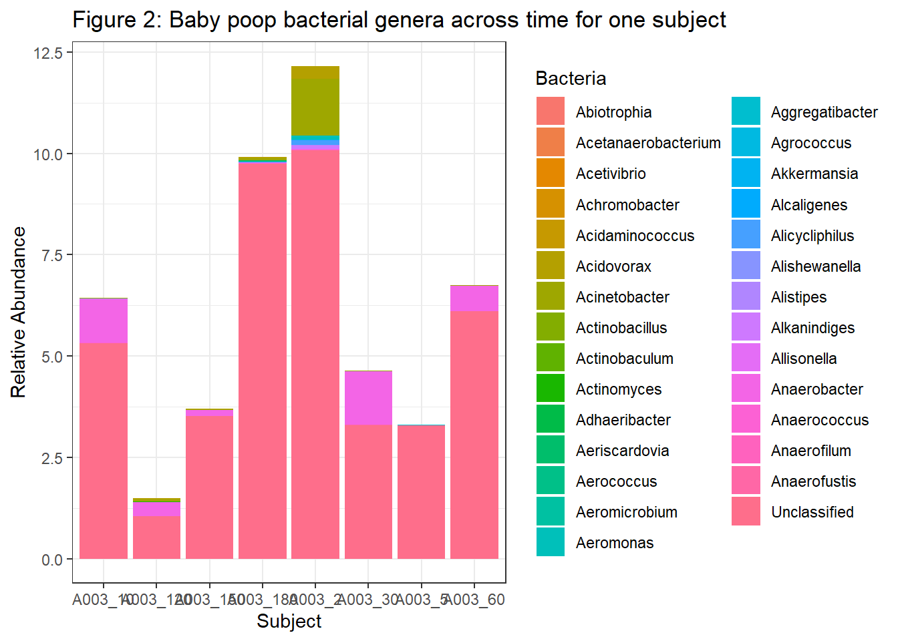
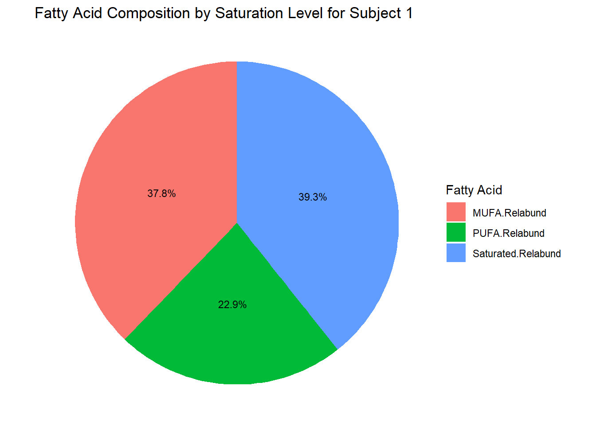

Code
library(tidyverse)
library(ggplot2)
library(Hmisc)
library(corrplot)Some good and some bad plots.
library(tidyverse)
library(ggplot2)
library(Hmisc)
library(corrplot)IF_top30 <- readRDS("IF_top30.rds")
IF_top30[1:12,1:4] -> IF_top30
IF_top30 Bacteroides Escherichia.Shigella Veillonella Clostridium.sensu.stricto
A003 0.23493134 24.673455 6.669314 8.2969238
A005 4.02761085 20.209191 11.172658 6.0197771
A007 0.19334102 4.074306 24.975276 0.6596882
A009 0.02770472 57.396700 0.141698 11.1079596
A011 9.26831811 4.852270 18.251579 0.0529379
A013 0.25171539 14.938691 25.188360 2.9026206
A015 40.65170057 13.094584 2.053467 0.1528290
A017 29.87910938 4.391378 5.191063 0.3075670
A019 44.56634097 7.588656 5.023680 0.1064486
A021 40.75502674 1.106360 4.905019 3.9529656
A025 34.51478583 1.733203 3.560540 0.0000000
A027 1.02156002 6.573110 28.744404 24.6382943IF_top30 <- IF_top30 |> rownames_to_column(var="Subject")IF_top30 |> pivot_longer(
cols=-Subject,
names_to="Bacteria",
values_to="Abundance") -> IF_top304 different color hues effectively separate the type of bacterial genera.
The length of the bar clearly shows the relative amounts of each genera.
g1 <- ggplot(IF_top30, aes(x= Subject, y= Abundance, fill=Bacteria)) +
geom_bar(stat="identity") +
labs(title="Figure 1: Top 4 baby poop bacterial genera in 12 healthy infants",
x="Subject",
y="Relative Abundance")+
theme_bw()
g1Infant_Fecal_Relabund <- readRDS("Infant_Fecal_Relabund.rds")
Infant_Fecal_Relabund <- Infant_Fecal_Relabund |> rownames_to_column(var="Subject")Infant_Fecal_Relabund[1:8,1:30] -> Infant_Fecal_RelabundInfant_Fecal_Relabund |> pivot_longer(
cols=-Subject,
names_to="Bacteria",
values_to="Abundance") -> Infant_Fecal_RelabundFigure 2 contains a lot more data, but many of these bacterial relative abundances are zero and the tallest line is the Unclassified genera.
“The importance of the attribute should match the salience of the channel”- in this case the large unclassified block and the inclusion of far too many genera impact the effectiveness of this plot.
g2 <- ggplot(Infant_Fecal_Relabund, aes(x= Subject, y= Abundance, fill=Bacteria)) +
geom_bar(stat="identity") +
labs(title="Figure 2: Baby poop bacterial genera across time for one subject",
x="Subject",
y="Relative Abundance")+
theme_bw()
g2
I think we can clearly distinguish both stronger and weaker correlations, and also the direction of correlation.
IF_top30_fresh <- readRDS("IF_top30.rds")
IF_IF_rcorr <- rcorr(as.matrix(IF_top30_fresh[1:20,1:20]), type=c("spearman"))corrplot(IF_IF_rcorr$r, p.mat=IF_IF_rcorr$P, sig.level=c(0.01,0.05),
insig='label_sig', pch.col='black', pch.cex=0.7,
method=c("circle"), tl.cex=0.5, order="AOE", type="lower", diag = F)
mtext("Infant Fecal Microbiome Correlation with AOE Cluster (6 mo avg)", line =3)
I think that the little triangles of light blue and light orange cannot be distinguished. This plot also contains redundant data (upper and lower triangle) which makes it hard to know what is actually important.
IF_IF_rcorr2 <- rcorr(as.matrix(IF_top30_fresh[1:20,1:20]), type=c("spearman"))
corrplot(IF_IF_rcorr2$r, pch.col='black', pch.cex=0.7,
method=c("pie"), tl.cex=0.5)
mtext("Figure 6 - messy shapes that can barely be distinguished", line =3)I think the ellipses are terrible.
corrplot(IF_IF_rcorr2$r, pch.col='black', pch.cex=0.7,
method=c("ellipse"), tl.cex=0.5)
mtext("Extra: ellipses", line =3)